KIRILL MOROZOV · X ARTICLE DRAFT
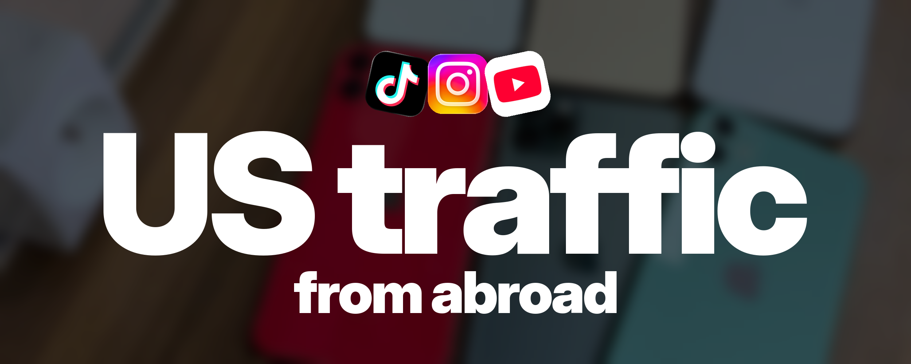
How to Reach US Viewers Without Living in the US
If you're trying to reach US viewers from abroad, you've probably run into conflicting advice about SIM cards, VPNs, and phone settings.
I've grown medical content to roughly 1.7 million followers and earned from TikTok while living outside the US.
Here's how I set up the phone, connect the proxy, and get a new account ready to post. You can follow the whole process without hunting for a US SIM card.
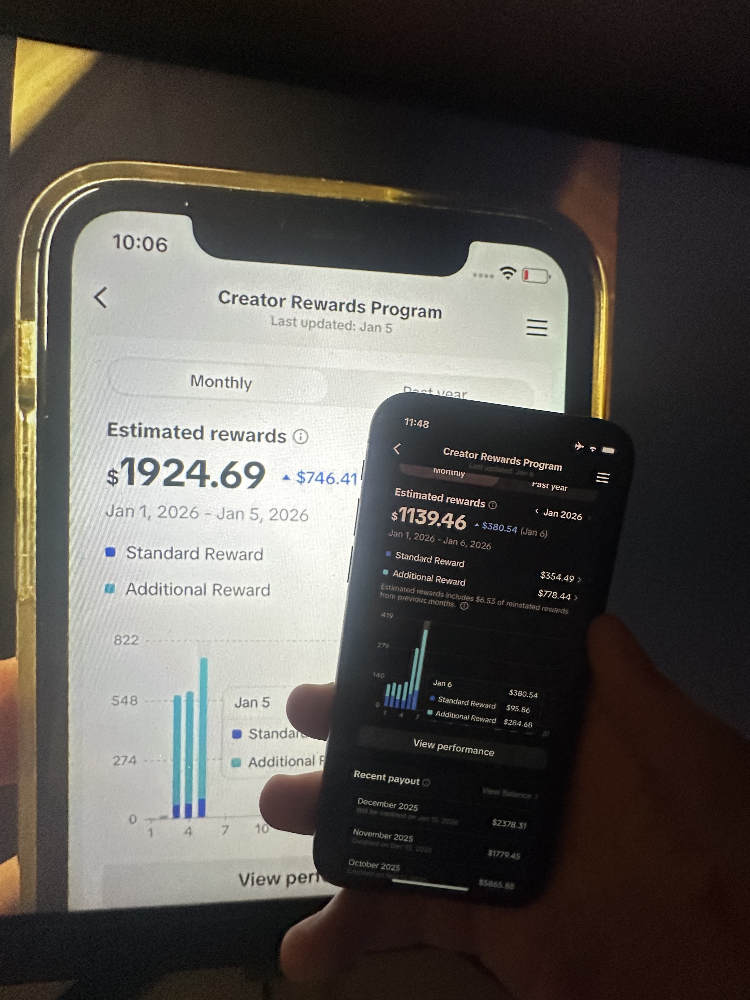
I'll use TikTok as the main example, then cover what changes for Instagram and YouTube.
Use this setup at your own risk.
make sure you save this article so you can read it later or prompt it with your agent
1. A separate iPhone makes the setup easier to control
I start with a separate iPhone. My personal accounts, contacts, and everyday browsing stay on my main phone.
You don't need an expensive new phone. Buy a used model that can run a currently supported iOS version and the apps you need. Check compatibility before paying; the old “iPhone 8 or newer” advice is aging badly.
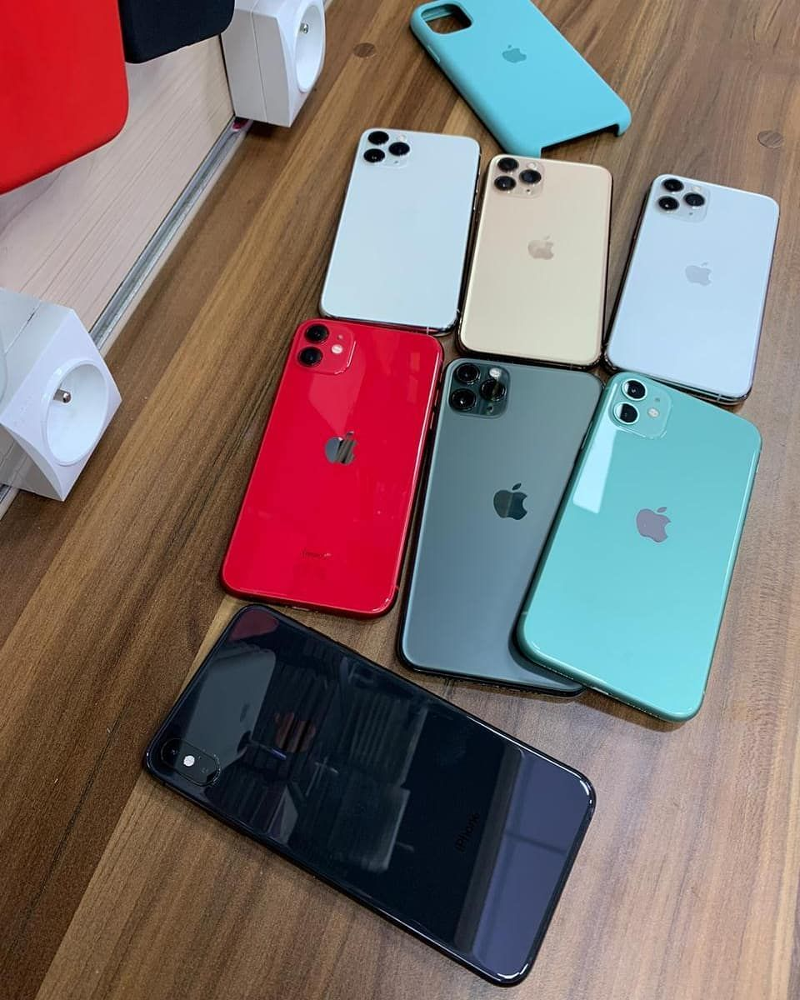
For this workflow, remove the physical SIM and disable any active eSIM. Back up anything you need, then factory-reset the dedicated phone and set it up as a new device. Restoring your personal backup brings the old setup right back.
I use Wi-Fi with Airplane Mode on. Turn Wi-Fi back on after enabling it, and check Bluetooth separately if you want it off.
A reset clears the local setup; existing account history stays with the platform.
2. Set the phone up for the market you work in
During onboarding, choose English and the United States as the device region. Use a dedicated Apple Account with an email you control, then update iOS before installing the social apps.
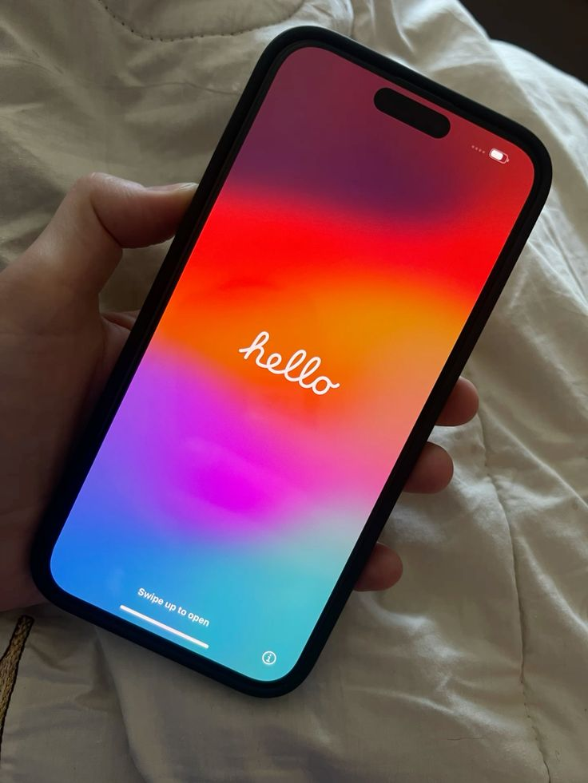
In Settings → General → Language & Region, check the language and region again. Set the clock to the US time zone you plan to work in; “US time” can mean several different things.
In Settings → Privacy & Security → Location Services, review location access. I keep location access off on this work device and skip contact syncing inside the social apps.
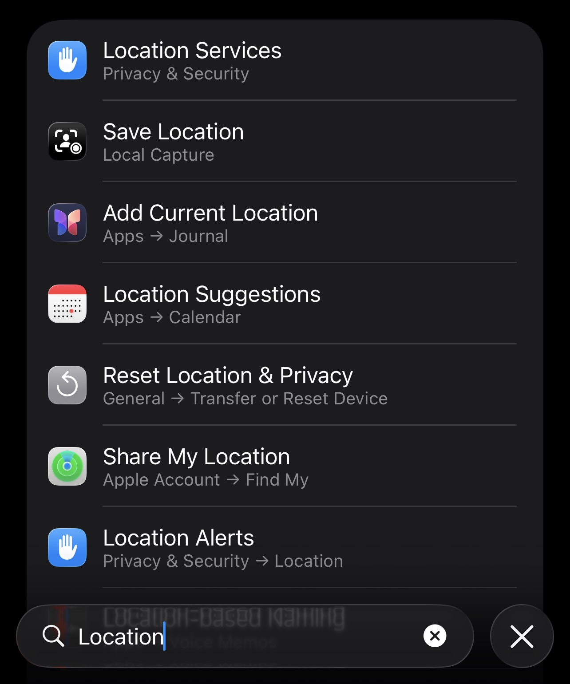
The phone region and the App Store country are separate settings. A US device region doesn't switch the store automatically. If you need a different storefront to download an app, change it through Apple's account settings and use billing information that is valid for that account.
Skip optional analytics and ad-personalization prompts during onboarding if you don't need them.
TikTok uses information including SIM region, IP address, and system settings to estimate location. Location and language are also among its recommendation signals. Turning off GPS access doesn't remove the other signals.
3. Choose the connection by its IP, stability, and cost
VPN, VPS, and proxy get thrown around as if they were three quality levels. They're different things.
A VPN routes traffic through a tunnel. The exit IP can be shared or dedicated; the word VPN alone doesn't tell you its reputation.
A VPS is a rented virtual server. You can run a VPN or proxy on it, but its IP will usually belong to a hosting network.
A proxy forwards traffic through another endpoint. It can use a datacenter, ISP, residential, or mobile IP. Buying something called a proxy doesn't automatically mean you're browsing through someone's home Wi-Fi.
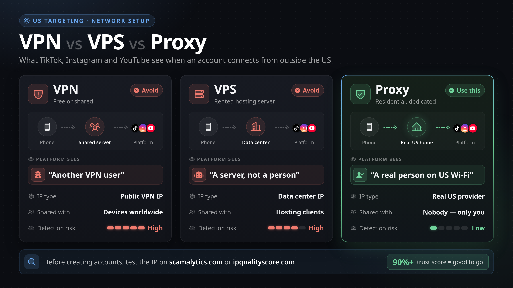
Read this as a simplified buying guide. IP type and actual routing matter; a proxy label alone doesn't prove a home connection or low risk. The 90%+ target applies only to a positive anonymity rating, not a fraud score.
For this setup, my pick is a dedicated US ISP proxy with a stable IP from IPRoyal. I want the same connection each time and a bill that doesn't climb while I'm watching videos.
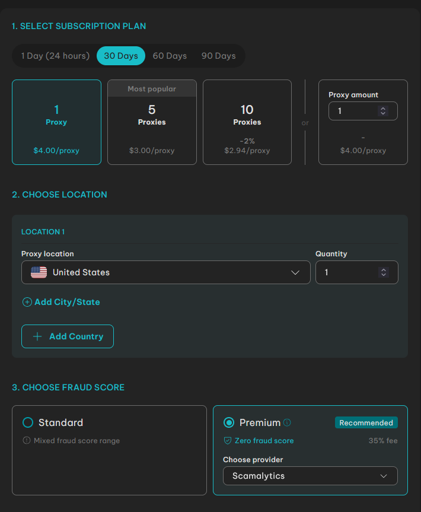
ISP proxies use IPs registered with internet service providers, but they can still be hosted on servers. Residential proxies route through residential connections; plans billed by traffic can get expensive when you're watching and uploading video. Mobile proxies use cellular networks.
A dedicated VPN can also fit. I skip free shared VPNs for this workflow because I have less control over the exit IP and who else uses it. Paying for a product, by itself, doesn't prove the IP is good.
Before buying, check the US location, whether the IP is dedicated and static, the traffic allowance, and SOCKS5 support. Those details matter more than a “premium” badge.
Happ connects the proxy to the phone
Install Happ – Proxy Utility from the App Store. This app is the client; your proxy provider supplies the connection.
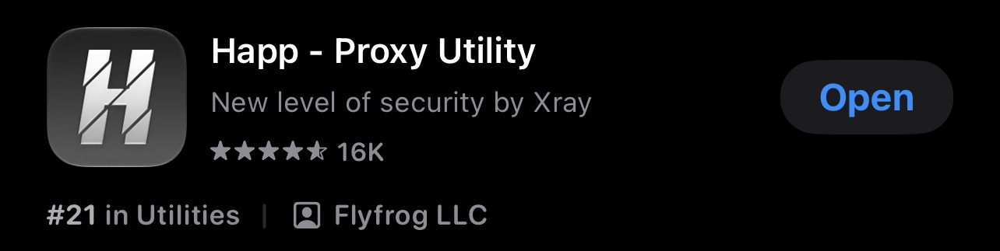
In Happ, open + → Manual Input → SOCKS. Enter the server address, SOCKS5 port, username, and password from your provider's dashboard, then save and connect.
Use the port shown for SOCKS5. HTTP and SOCKS5 credentials can look almost identical while using different ports, so copying the wrong line can leave you debugging a perfectly good proxy.
Allow Happ to add its VPN configuration when iOS asks. Seeing “VPN” in iOS is normal: that's how the client routes traffic through the connection. Check that your routing profile sends the social apps through the proxy rather than a direct-connection exception.
Check the public IP from the phone with the connection active. Use IPLocation to check the country and network, and Scamalytics or IPQualityScore to inspect the IP's reputation. If the result still shows your normal connection, fix the routing before creating accounts.
If a checker gives a positive anonymity rating where higher is better, 90%+ is my working target. Read the label first: on Scamalytics and IPQualityScore, a higher fraud score is worse. Use each site's good/low-risk verdict in its own context; these scores don't certify future reach on TikTok.
Once the connection works, keep it active while installing and using the social apps. Recheck after a restart or a connection change instead of assuming the profile is still routing traffic.
4. Use the first few days to learn the niche
Create the account with a Gmail or Outlook address you control. Verify the email, enable two-factor authentication, and skip importing your contacts.
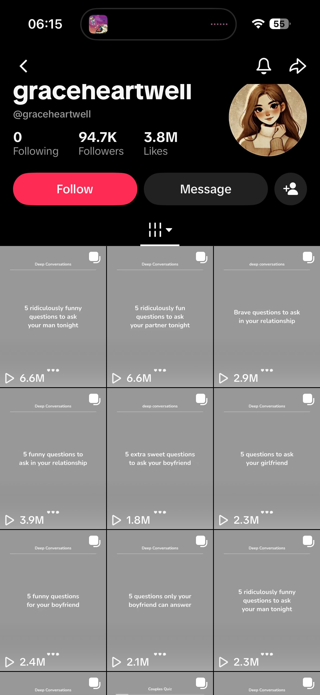
My usual TikTok routine is to leave the account for about a day, spend the next two or three days browsing the niche, and start posting around day four or five. I fill in the profile gradually during that time.
Those are my timings. Treat the schedule as a starting point for your own routine.
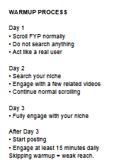
The reference above follows a similar routine. Watching relevant content helps shape the feed you see; it doesn't guarantee who sees your uploads.
Search in the language your audience uses. For a fitness account, “how to gain abs,” “high protein meals,” or “gym tips for beginners” will give you more useful material than endlessly refreshing a random feed.
Open a relevant video, watch it, save it if it's worth studying, and follow the creator if you want to see more. Read the comments too. They show the questions, objections, and vocabulary your own videos need to address.
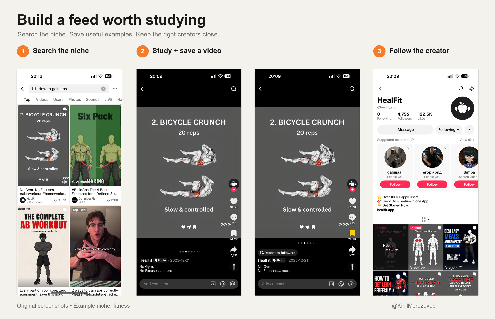
I can spend around an hour a day on this early research, then keep shorter sessions once I'm posting. You don't need a quota of likes, follows, or DMs. Liking everything turns your research into noise.
If the feed is in the wrong language, start by finding English content, then narrow down to the niche. A relevant feed becomes a useful source of ideas. It tells you what the account is being shown; your upload analytics tell you who is watching you.
Keep one setup record so you can find what changed
If you change the IP, niche, and posting routine at once, you won't know what helped. Write down the setup before you start changing it.
Keep one record for each account. You can copy this into a note or give it to your agent:
US AUDIENCE SETUP
Platform + account:
Target viewer and niche:
Device + iOS version:
Device language / region / time zone:
SIM and location settings:
Connection type + provider:
Expected exit country / city:
IP check date + result:
Email verified + 2FA enabled:
First upload date:
AFTER PUBLISHING
Video topic + opening hook:
Top viewer countries:
US viewer share, if available:
Watch time / completion, if available:
Account or recommendation notices:
One change for the next upload:
Leave missing analytics blank.
Keep passwords and recovery codes in a password manager.
Instagram and YouTube need their own decisions
For Instagram, I give myself roughly a week to research the niche and prepare the profile. Use a public account for reaching non-followers, and check Account Status for recommendation restrictions if distribution looks wrong.
Study the creators your target audience follows and the content they send to friends. Upload a clean original export instead of a copy carrying another app's watermark. Keep the subject, spoken language, on-screen text, and profile promise aimed at the same viewer.
For YouTube, don't spend a week treating the channel's country setting as a US targeting switch. YouTube explicitly says that setting isn't used to decide how videos are recommended.
Write the title and captions for the viewer you want, then check viewer geography in YouTube Analytics. You can reuse an idea across TikTok, Reels, and Shorts; check the audience each platform actually sends you.
For all three, English is a starting point. An American viewer still needs a reason to watch. The examples, problem, product, and wording should fit the person you're trying to reach.
The first uploads show what the setup is doing
Give the first video your best shot. Make the subject obvious early and deliver what the opening promises. Then check where the viewers came from and whether they stayed.
If the country is wrong, review the connection and the account's regional settings, then look at whether the content itself attracts that market. A working US IP alone doesn't promise an all-US audience.
If people arrive and leave immediately, work on the video. If there are no views, check visibility, processing, review status, and recommendation notices before wiping the phone again.
A failed follow action also isn't enough to diagnose a shadowban. Repeating it over and over won't tell you why it failed.
Treat the first uploads as a test of the whole workflow. Audience geography and monetization eligibility are separate; an IP change doesn't establish eligibility for a payout program.
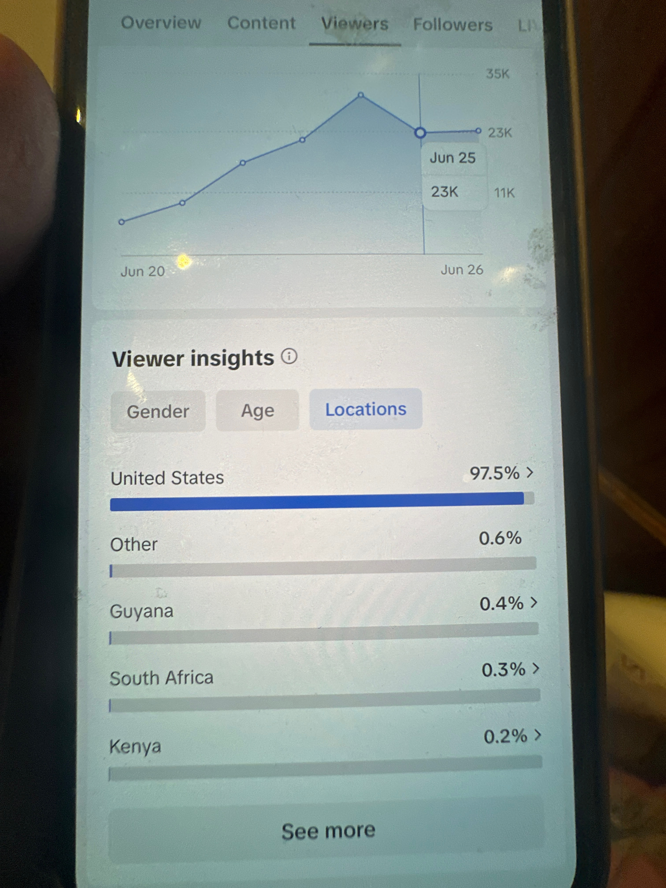
Once you're managing a larger group of accounts, document ownership, access, exports, and uploads before adding automation. Fix the workflow while you can still see where it breaks.
And please, put some effort into what you post. A properly configured phone is still going to upload whatever AI slop you feed it.
Follow me for more practical breakdowns on building apps and distributing them.